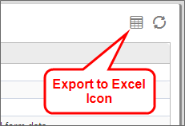
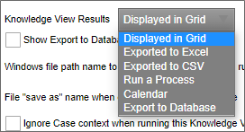
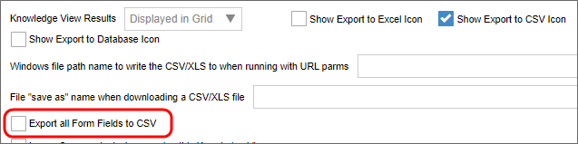
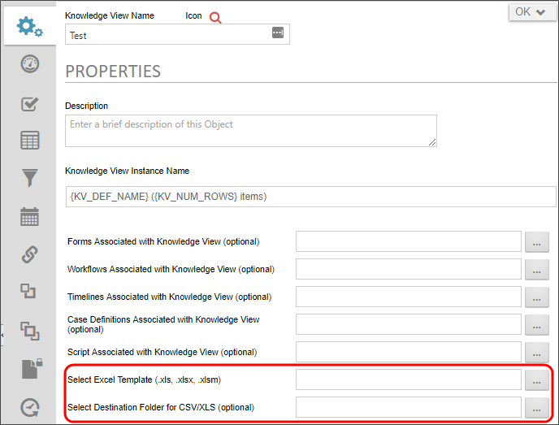

The default behavior of a Knowledge View is to display the result list in the browser. For more detailed analysis, though, you may need to export the Knowledge View into a more accessible format, so, Knowledge View results can be exported to a CSV file (which can be opened by Excel). If you have a Cloud installation, Subscription license, or the older Tiered license with Office Integration component, you can export directly to Excel, and use Excel templates to modify or style the exported file.
When exporting to either CSV or Excel, exported Date/Time fields will contain both the date and the time.
To export the results to a CSV file select the Show Export to CSV Icon check box in the Knowledge View definition's Configure tab. Doing so will display an export icon at the upper right corner of the Knowledge View. This option is selected by default when a new Knowledge View is created.

There are two options when exporting the results to a CSV file. First, you can set the Knowledge View Results property to "Displayed in Grid", which is the default option. Second, you can set the Knowledge View Results property to "Exported to CSV", which will automatically save the data to a file on your local computer.
If you want to prompt the user for additional filter data on this Knowledge View when running the report, choose the option "Displayed in Grid" to allow the user to click on the icon to export the results after the filter data is entered.

Additionally, selecting the Export all Form Fields to CSV option will export all form data, regardless of what is defined on the columns. When this option is selected, all form fields will be exported after the defined columns. This will also cause the default display options for the columns to export only (only the first column will appear on the screen).

The results of the Knowledge View can also be streamed to an Excel template and have a report run automatically. This will result in Excel opening and running a report based on the data just retrieved from the server.
To enable the export of Knowledge View results to an Excel file, check the Show Export to Excel Icon checkbox in the Configure tab of the Knowledge View definition, then click the Update button to see more Excel options on the Properties tab of the definition. These additional properties won't appear on the Properties tab unless one of the export to Excel options is set on the Configure tab and the definition is updated.

Before a Knowledge View can be exported to an Excel file, an Excel template file located in the Content List must be linked to the Knowledge View. To link to an Excel template file, set the Select Excel Template property.
Knowledge Views can immediately export their results to an Excel file when opened. To activate this option, select the “Export to Excel” option in the Knowledge View Results dropdown.
Please refer to the topic on configuring Knowledge Views to configure the use of the Selected Destination Folder... and Export File Name... properties to use when exporting the Excel file to the Content List.
If the “Displayed in Grid” option is selected, then the Knowledge View results will display in the browser, along with an icon button giving the user the option to export the results to an Excel file.
The Excel Template Report file defines how the data in a Knowledge View will be displayed in an Excel report.
Apply formatting to the columns in the Template Excel file such as date/time and number formatting, using the Format Cells command in Excel.

In the template XLS document, you must place Smart Markers where you want the results of the Knowledge View to be imported. The smart markers take this format:
&=BP.col1
Where col1 is the name of the Knowledge View column. For example, the image below defines 3 columns in a template XLS sheet.

These columns will be filled with data from the corresponding columns (Contract Date, Customer, Customer Type) in the Knowledge View. The column names defined in the Smart Markers must match exactly the column names defined in the Knowledge View.
You can also place formulas in columns using the syntax described below, in the Excel Formulas section.

If you define a range in the Excel template that includes the header columns, and the template columns, the range will automatically be expanded as results are inserted into the spreadsheet.

The Excel template file can contain Pivot tables or Excel formulas that can be automatically run against the data. Create the Pivot Table against a RANGE name that encompasses the template and header column. When the Knowledge View is run, it will stream (export) the results into the RANGE specified. The number of rows in the RANGE will be expanded automatically to accommodate the number of records returned from the Knowledge View.
To automatically run a Pivot Table, ensure that the option is selected in Excel that indicates the Pivot Table Report should run when loaded (i.e. Refresh on open).
Also, when using a Pivot table, ensure that the Excel file you upload in to the Content List was saved with the Pivot Table Graph as the sheet that is displayed. When the Excel file is saved, it will open with the same sheet displayed.
You can include special columns in the Excel output range which will automatically be filled in when the report is delivered to the user. You don't need to include these columns in the Knowledge View Definition.
Variable Syntax for these special columns should be:
&=$Var_Name

The following variable names are available for use:
| COLUMN |
DESCRIPTION |
|---|---|
BP_KV_NAME
|
The Name of the Knowledge View Definition. |
BP_KV_DESC
|
The Description of the Knowledge View Definition. |
BP_ROW_SECOND
|
The value of the "second line" configured for this Knowledge View of the current row. This can be used like any other column name. |
BP_FILTER_1
|
The value of the first filter criteria (if any) in the Knowledge View Definition |
BP_FILTER_2
|
The value of the second filter criteria (if any) in the Knowledge View Definition, etc. |
BP_KV_CURR_USER
|
The name of the current user |
BP_KV_CURR_USER_EMAIL
|
The email of the current user |
BP_KV_CURR_DATETIME
|
The datetime this excel file was generated |
Formulas must be formatted according to a specific syntax when create an excel report template.
The characters “&=&=” must precede any formula. The excel report template equation for “1 + 1” would then be as follows:
&=&=1+1
The character sequence “{r}” represents the current row number. To display the current row number in a cell, one would use the following formula:
&=&={r}
One can also access rows other than that which a cell belongs to. For example, the access the previous row, one could put the following formula into a cell:
&=&={-1}
To return the value of a specific cell, you'd use the format “Column_Name{Row_Number}”. So, to display the value of column B in the current row, one would use the following formula:
&=&=B{r}
The string (numeric) after a formula will convert the value into a number. So, if you were to want to display this column as a number, you'd use this formula:
&=BP.MyColumn(numeric)
These components can be combined in any way to create a formula. For example, if I wanted to add one to the product of the previous row number and the value of column b in this row, I could use this formula:
&=&={-1} * B{r} + 1